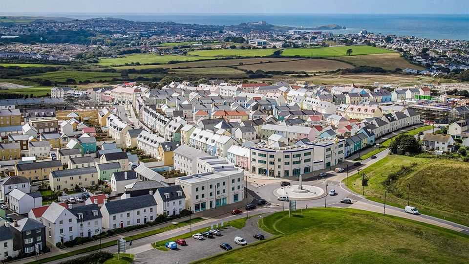
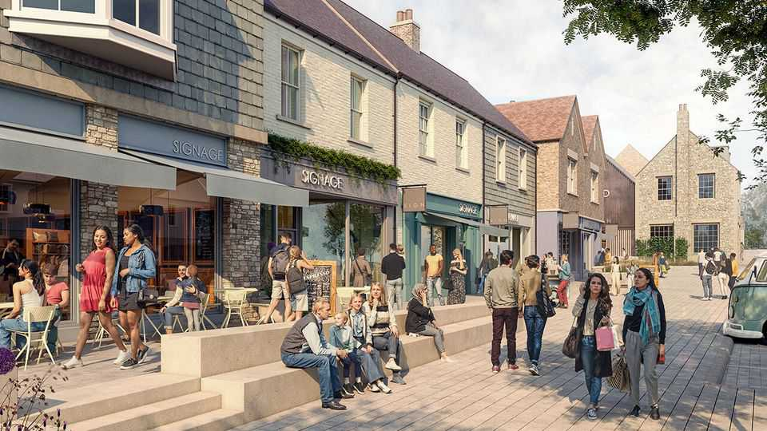

Prince William builds a high street
Go ahead and laugh. Your local shopping street will soon resemble it

Oct 29th 2026
Nansledan is a peculiar place. Few homes in the quarter-built settlement, near Newquay in south-west England, are more than a decade old. Yet they are a stylistic mixture of Georgian, Victorian and Art Deco. Street names are in the little-known, hard-to-pronounce Cornish language: Bownder An Mengleudh, Lergh Trewolek, Stret Myghtern Arthur. The unnervingly friendly residents occasionally spot Prince William, who in effect owns the land. But perhaps the strangest thing about Nansledan is that it is building a commercial high street.
Of all the features of the British urban landscape, the high street is the most troubled. A YouGov poll this year found that more people think their local one is in a bad state than think it is in a good state. High streets have suffered “decades of decline” and been “hollowed out”, declared Andy Burnham soon after becoming prime minister in the summer. Changing shopping habits mean many shops are vacant or occupied by charities, vape dealers, slot machines and barbers.
Few suburban developers create high streets these days. “You can always get more money in the short term by building another house,” says Hugh Petter, the master planner of Nansledan and a partner at adam Architecture. But the new Cornish burgh has an unusual owner in the Duchy of Cornwall, a centuries-old outfit that provides an income to the heir to the throne. The duchy, which thinks on much longer timescales than most builders, is trying to create a suburban small town, not just a collection of homes. And it reckons it has cracked the high-street problem.
Because Nansledan’s high street is still in the concrete-and-steel phase of construction, it is simple to see the thinking behind it. As far as possible, given the gentle slope on which the place is taking shape, the shop floors are built on the same level. The idea is that traders can start operating from a single small shop, then sprawl sideways into neighbouring properties if they succeed. Sam Kirkness, the executive director of development at Nansledan, says the shops could also be converted into houses, although he hopes that does not happen.
Behind the new high street two large buildings are rising. One, clad in timber, will become a Tesco supermarket. The other will be a market hall, modelled on a much-admired building in Altrincham, a posh suburb of Manchester. The shops around the market hall, most of which are likely to sell food, could be reconfigured even more radically than those in the high street. It should be possible to chop up or amalgamate commercial spaces in a great many ways.

The instinct that shopping streets need to bend and change as businesses grow or fail is a good one. “A lot of units on high streets are simply too big,” says Jan Kattein, a London-based architect (who is not involved with Nansledan). Mr Kattein, who has renovated many British high streets, argues that towns and cities need more small spaces where entrepreneurs can test a business idea cheaply. The tiny “micro-retail” spaces that he and other architects have wedged into courtyards and odd corners of cities are often in high demand, he points out.
The new commercial strip in Nansledan would be no more than a feature of a small Cornish development were it not for one thing. When it comes to urban planning the Duchy of Cornwall is hugely influential. In the 1990s it began to build Poundbury, a ridiculously named (and, in parts, ridiculous-looking) town in Dorset. Some of the things pioneered in Poundbury, such as tucking cars into courtyards and scattering social housing among market-rate housing, are now common in new suburban housing estates.
Amanda Langley, who lives in Nansledan and runs a chocolatier there, says that she often sees “Nansledan tourists”—urban planners and visitors who are curious about the new settlement. It is a peculiar place. But, if the duchy’s previous developments are a guide, it will not stay unusual. Prepare to see other high streets that look just like the one in Nansledan.■